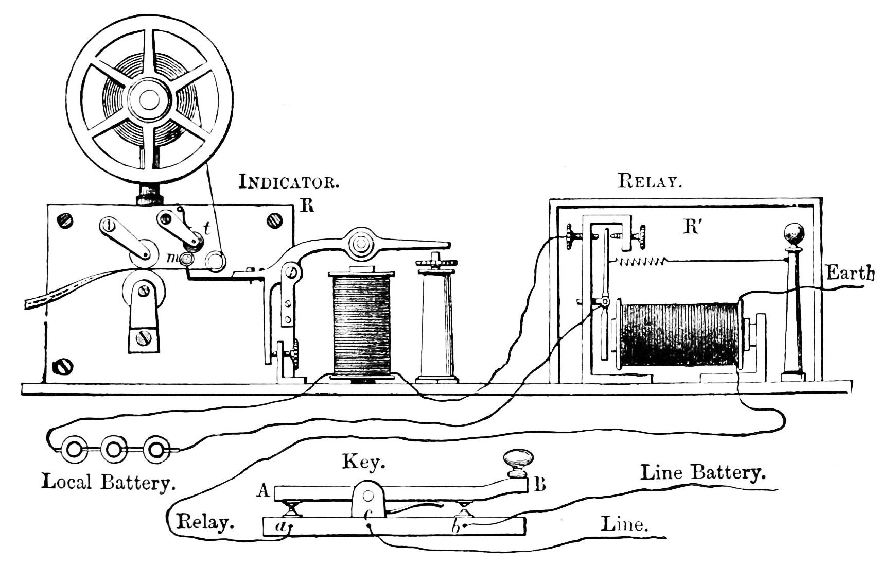

DATA COMMUNICATION PROJECT
This portfolio summarizes everything I studied in Data Communication including networking, protocols, transmission media, internet systems, wireless technologies and cybersecurity principles.
Topics Covered
Core Sections
Responsive Design
ID: PUIT/24210022
INTRODUCTION
I am passionate about networking, cybersecurity, software systems and modern communication technologies.
I studied how devices exchange data across wired and wireless systems.
Learned about secure communication, encryption and authentication.
COURSE SUMMARY
Studied LAN, WAN and MAN networks and their real-world applications.
Explored TCP/IP, HTTP, HTTPS and communication standards.
Learned about Wi-Fi, Bluetooth, microwave and satellite systems.
Understood firewalls, encryption and authentication methods.
Learned how browsers, DNS and servers communicate globally.
Explored fiber optics, twisted pair cables and radio waves.
HISTORY OF COMMUNICATION

The telegraph was one of the earliest inventions that changed the way humans communicated over long distances. Before the telegraph system was introduced, communication depended heavily on physical delivery methods such as letters transported by horses or ships. This made communication very slow and unreliable.
The invention of the electric telegraph in the 19th century allowed messages to travel almost instantly through electrical signals. The system used wires, batteries, switches and receivers to transmit coded information between locations.
One of the most important developments in telegraphy was the introduction of Morse Code, developed by Samuel Morse. Morse Code represented letters and numbers using combinations of short and long electrical signals known as dots and dashes.
The telegraph became the foundation for modern data communication systems. Many concepts used today in computer networking, internet communication and digital signal transmission originated from telegraph communication principles.
LEARNING MATERIALS
MOTIVATION
Technology inspires me because it connects the world, creates opportunities and solves real-life problems. Learning data communication has shown me how modern systems power businesses, healthcare, education and global networking.